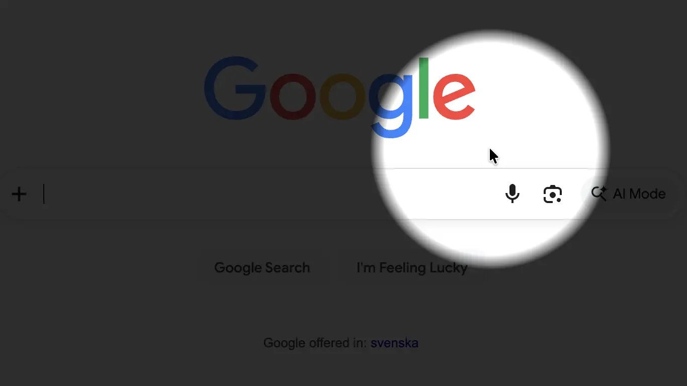
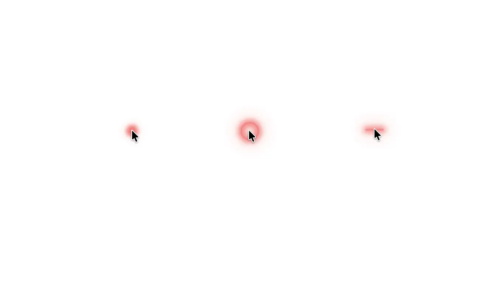
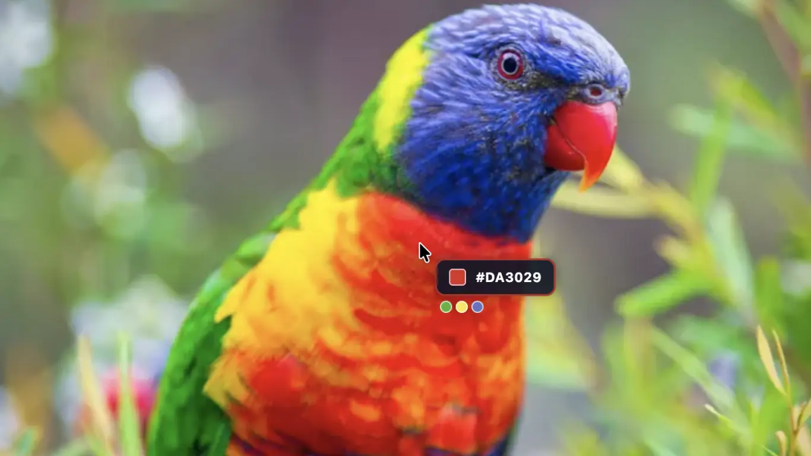
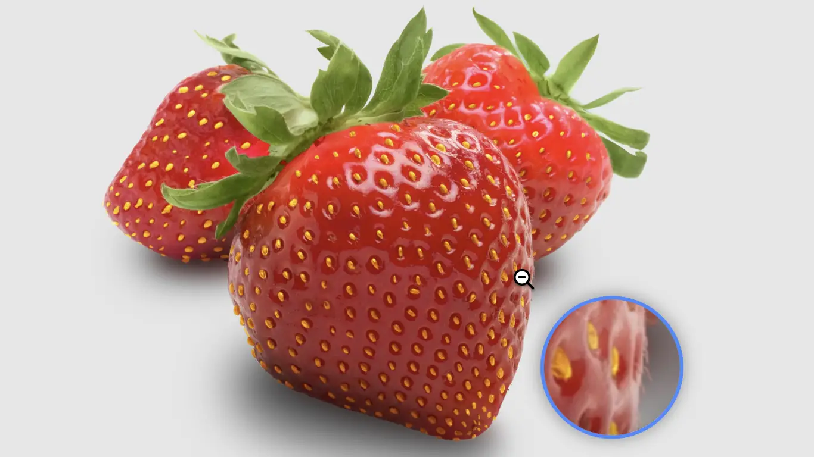
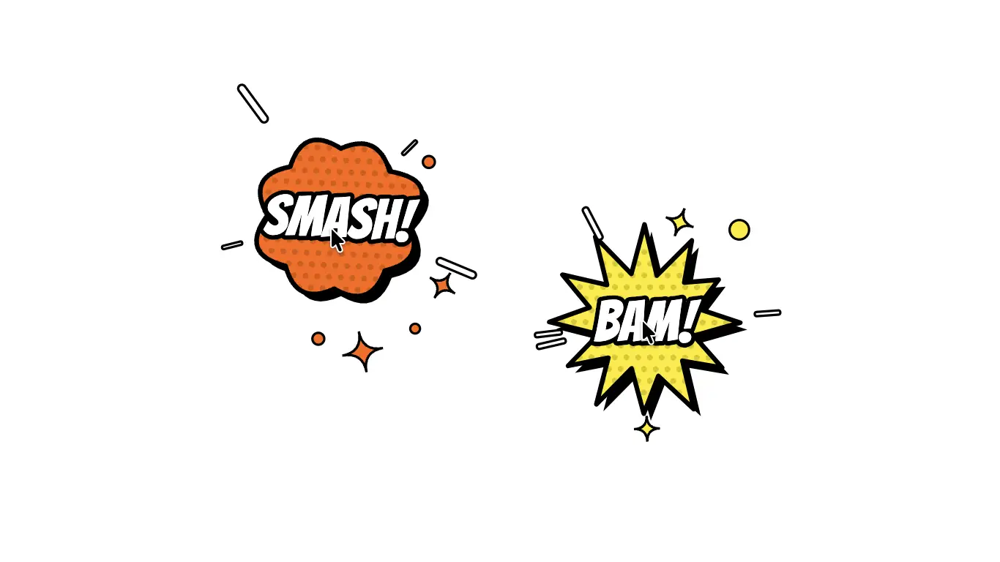
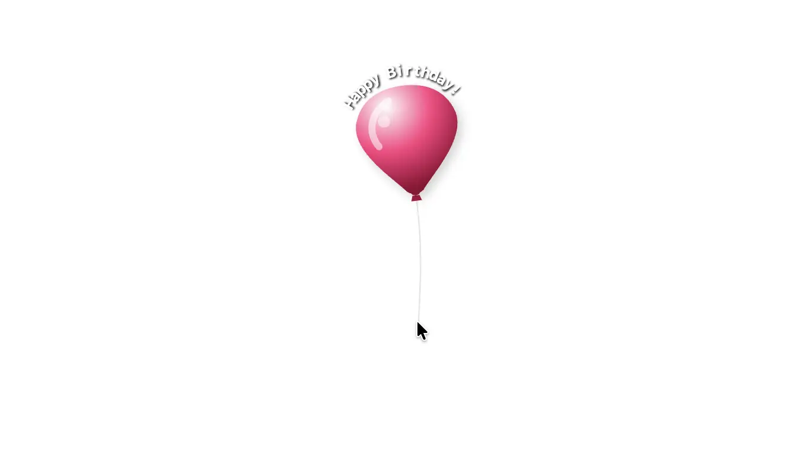

Pointus
for macOS & Windows
Dynamic mouse follower & desktop visualizer. Transform your cursor into a laser pointer, interactive presentation spotlight, precision designer tool, or other dynamic visualizer across both macOS and Windows.


Presenters & Educators
Guide attention during presentations and screen recordings with laser pointers, dimming spotlights and ripple click bursts so viewers never lose track.


Designers & Developers
Inspect interfaces down to the exact pixel with the floating Magnifier loupe, check bounds with full-screen crosshairs, or capture hex colors with the eyedropper.


Desktop Customizers
Spice up your generic system arrow with a friendly butterfly, particle trails, a floating birthday balloon, ascii fish, retro pop art visualizers and much more...
Every preset, crafted down to the pixel.
Switch presets instantly to fit a live demo, a tutorial recording, or daily desk work - fine-tuned independently:
General config
Align the visualizer exactly where you need it with custom x:y pixel offsets, or toggle whether your default OS cursor stays visible or hidden completely.
Fluid movement dynamics
Set custom pointer inertia, motion dampening, and tracking responsiveness to match high-refresh desktop monitors or cinematic screen recording speeds.
Pointer style & background
Select your base visual pointer follower, adjust colors, opacity, shapes, sizes, density and more. Then layer it with an optional background effect.
Stackable click & shortcut visualizers
Attach anything from zero to multiple independent visual effects across four dedicated triggers:
- Left mouse click: ex. distinct primary pulses, shockwaves, or ripples.
- Right mouse click: ex. secondary visual cues that distinguish context actions.
- Action shortcuts 1 & 2: two independent global hotkeys that fire visual highlights without clicking.
Multi-display & virtual desktop ready
Pointus seamlessly bridges monitor borders, multi-screen geometries, and multi-desktop environments.
Configurable
Pointus is always just a keypress away, and comes with default global shortcuts for common actions like turning Pointus on/off, and trigger the primary & secondary actions. If you want, you can always assign your own key combinations instead.
0% CPU idle sleep
Pointus does not waste cycles. When your cursor rests and active animations finish, the physics engine cuts background processing completely to eliminate battery drain.
| Capability | Free version | Pro version |
|---|---|---|
| Mouse click effect triggers (x2) | ✓ | ✓ |
| Hotkey effect triggers (x2) | ✓ | ✓ |
| Follower offset | ✓ | ✓ |
| System cursor visibility toggle | ✓ | ✓ |
| Mouse follower presets | ||
| Laser pointer | ✓ | ✓ |
| Crosshair | — | ✓ |
| Spotlight with animated zoom | — | ✓ |
| Magnifier | — | ✓ |
| Color picker/eydropper | — | ✓ |
| Pop art | — | ✓ |
| Particles | — | ✓ |
| Stopwatch | — | ✓ |
| Coordinates | — | ✓ |
| System monitor | — | ✓ |
| Speedometer | — | ✓ |
| Birthday balloon | — | ✓ |
| Charm on a rope | — | ✓ |
| Charm on a rubber band | — | ✓ |
| Aquarium | — | ✓ |
| Butterfly | — | ✓ |
| Pac-man arcade | — | ✓ |
| Background effects | ||
| Spotlight | — | ✓ |
| Aquatic bubble stream | — | ✓ |
| Pac-Man | — | ✓ |
| Laser grid highlight | ✓ | ✓ |
| Alignment axis | ✓ | ✓ |
| Effect (click/trigger) visualizers | ||
| Ripple | ✓ | ✓ |
| Pop art explosions | — | ✓ |
| Screen flash | — | ✓ |
| Quantum splinters | — | ✓ |
| Laser grid pulse | — | ✓ |
| Ascii fish | — | ✓ |
| Fishing hook | — | ✓ |
Does Pointus run on both Mac (macOS) and Windows?
Yes! Pointus is designed to run natively on both macOS and Windows with minimal system overhead:
• macOS: macOS 13 (Ventura) or later. Runs natively on both Apple Silicon (M1/M2/M3/M4) and Intel-based Macs.
• Windows: Windows 10 (64-bit, version 1903+) and Windows 11.
Will running Pointus drain my laptop battery when not in use?
No. Pointus is built with a 0% CPU idle architecture. As soon as your pointer reaches rest and active animations clear, application activities will pause automatically until motion or hotkeys are detected again.
Will the mouse follower and visualizations show when presenting in online meetings (Teams, Zoom etc.)?
Yes! Just make sure you share the entire screen/desktop when presenting.
All
effects and visualizers will be fully visible to your audience.
Note that
sharing a single app in Teams or Zoom (or similar) hides all desktop overlays,
including Pointus - causing only your default system pointer to be shown.
Why does Pointus request Accessibility permissions on macOS?
macOS require Accessibility permissions so Pointus can calculate cursor coordinates globally across all displays and render visual effects smoothly on top of other running applications. To allow Pointus to function, you must manually designate it as a "trusted" application in your Mac's Settings (System Settings > Privacy & Security > Accessibility) which is normally prompted for when launching the Pointus app.
How do I activate Pointus Pro?
Find the "Upgrade to Pro" option in the application menu and follow the instructions. All payments are handled by an external payment provider (Stripe), and will not go through, or be visible in our systems. Only the verification of your actual payment will be sent back to us.
When you purchase Pointus Pro, you receive a personal license key. You can click the instant activation link on the checkout confirmation page or manually enter your key inside the app’s Pro License menu. Make sure to save the license key for future reference. Your license key is personal and is not to be shared with anyone else.
Is it safe to download and install Pointus?
Yes, downloading Pointus from the official download site (253below.com) or from Microsoft Store is perfectly safe!
For Mac users (macOS) - Apple Verified & Notarized: The Pointus macOS installer (.dmg) is cryptographically signed using an official Apple Developer ID, verified and notarized by Apple’s Notary Service.
For Windows users (Windows) - Microsoft Store Certified: The Windows version is packaged as a secure MSIX container. It is signed with a trusted publisher certificate and distributed directly via the Microsoft Store.
What about privacy and my data?
Pointus does not collect personal identifiable information (PII) during everyday use. We do not know who you are, what your IP address is, or what you use your computer for. The only personal data we ever hold is your email address if you choose to purchase Pointus Pro, stored strictly to issue and verify your license key.
No screen capture or keystroke logging: While Pointus requires accessibility permissions to draw custom visualizers over your standard mouse pointer, it never records your screen, captures your keystrokes, or tracks what you click on across other applications and websites.
Pro purchases & payments: Financial details are processed securely by Stripe and never touch or enter our systems. We only receive payment confirmation to record your email address and generated serial number for activation and key recovery. Your license record is completely isolated and never connected to what you do in the app.
Anonymous telemetry (opt-out): To help us fix bugs, improve performance and focus our development, Pointus collects minimal, anonymous usage statistics (ie. which visualizer themes are popular). You can easily turn this off at any time with a single click in the app’s Settings menu. Also see: privacy policy.